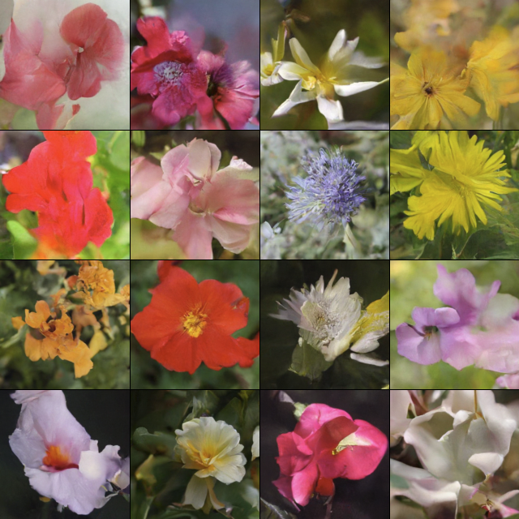

Diffusion Policy Part 2
Generating Images
Implementation here. See also: Part 1 | Part 3
Concrete Implementation Details
My previous post details my understanding of diffusion (see link above), but I wanted to actually see it in action. Before attempting diffusion policies (next post), I tried unconditional generation of images. In this case, images of flowers, because they are colorful and the Oxford Flower dataset has a few thousand of them.
To summarize the last post, our outline for a diffusion model is:
High-Level DDPM Routine
Grab a bunch of images and create a process by which we can add varying levels of noise
Train a model which can predict, for a noisy image, the noise that is present.
Start with pure noise and then repeatedly feed it through this model to predict what noise should be removed. If we do this in many increments we can chip away at the noise until a nice image has been generated.
The main decision remaining is the architecture of our model, and the DDPM paper used a U-Net. A U-Net processes input at multiple scales, allowing it to examine both the details and overall structure of an image. Similar to an autoencoder, it progressively downsizes the input and then upscales it back to full size, but unlike an autoencoder it allows data to skip around the bottleneck at each scale:

At each scale we need to design two complementary halves- a module that downsizes the image and a module that scales it up, with a connection in between. I messed this up a few times trying to get all the shapes and scales to line up, so it is important to do things in the right order. During the forward pass, you want to:
Process the input with a series of convolutions that do not change the dimensions, but possibly increase the number of channels.
Store the result of this to send through the skip connection.
Downsize the data with a pooling layer (generally, half the size)
Send to the next module (or middle bottleneck)
Then, when you are scaling back up the corresponding module should:
Upscale the input to the appropriate size (double the size)
Concatenate the channels from the skip connection. Now our data temporarily has twice as many channels.
Process with a series of convolutions that do not change the dimensions, other than reducing the channels back to the original amount after the concatenation.
One pair of the U-Net therefore looks like:
Typically, the number of channels increases as we get deeper into the net (smaller images but more channels). Additionally, sandwiching the whole thing with convolutions that map to a higher number of channels and back is helpful- a 3-channel image might come in, we map to 32 or 64 channels, feed through the U-Net, and map back to 3 channels. At the bottleneck, we can have a stack of convolutions or an MLP or whatever we want to process the compressed representation of the image.
Conditioning on Time and Convolution Details
The standard U-Net is missing one critical component for diffusion: we need to condition on the current time (where we are in the diffusion process). The way this is done in practice is pretty interesting and would not have occurred to me right away. There are two steps:
Firstly, the time is represented as an integer between 0 and 1000. Somehow we need to turn this into a feature vector, and for this we can use a position embedding, just like the position embeddings in a language model. Most implementations seem to use a sinusoidal embedding (rather than a learned embedding), so that is what I used, but I would expect either to be fine. For a given pass, we first map our integer time into a feature vector with an embedding.
Next, we need to actually inject it into our U-Net, and we can inject it all over the place so that all the different scaled versions of our data can benefit. Specifically, we add it into every convolutional block. The data flowing through the convolution will be size (C, W, H), while our time features are only size (F,), so we need to make these line up. Using a linear layer we can project F features into C features, and then just repeat the tensor along the other dimensions to get (C, W, H).
Rather than just adding this to our current data (an offset), an implementation that I really liked also learned a scaling factor based on time, offset by 1.0 so that by default there is no scaling:
Adding Time Features
Given current data x, size (C, W, H)
Given time features of size (F,), from an embedding layer
Project the features to a scale and an offset (two linear layers of size (F,C)):
scale = Linear1(x) + 1.0
offset = Linear2(x)
Repeat both of these along new dimensions to match (C, W, H)
x = x*scale + offset
Including this component, our full convolutional block has the following forward pass:
def forward(self, x, t_emb):
# first convolution
y = swish(self.norm1(x))
y = self.conv1(y)
# time features
t = swish(t_emb)
scale = self.time_scale(t)[:,:,None,None] + 1.0
shift = self.time_shift(t)[:,:,None,None]
y = y*scale + shift
# second convolution
y = swish(self.norm2(y))
y = self.dropout(y)
y = self.conv2(y)
# return with residual connection
return y + x
This shows some of the additional details of our model. I used swish() as the activation function, group norms, and dropout with probability 0.1.
Training
I initially tried a small model generating 64x64 images, the Adam optimizer (lr=0.0001), batch size of 32, and 100 epochs. Having recently worked a lot in language models, I used a cosine annealing schedule.
I found EMA to be very useful, and small models tended to collapse so I increased the channel counts until the model was in the 10s of million of parameters. Convergence was slow, and I actually killed the run several times because I thought it wasn't working- it turns out that the early generations are just horrible :) See the results after 10 epochs below:

So the biggest lesson was, be patient with diffusion models.
These results were pretty good, but I wanted to see something better, so I switched over to my shiny new 4090 and increased resolution to 160x160, training for 400 generations with an even larger model.
Results
The big run yielded pretty good results in my opinion. Not perfect, but a few of them are passable as real flower photos I think:

Lessons Learned
I wanted to also catalogue a few things that really tripped me up at first:
Like I said above, bad early results do not mean the model is broken. It's just slow.
Small models just made cloudy outputs and couldn't progress past that (here "small" is still pretty big- maybe 1M parameters.)
Attention did not seem to help here, although this is not the most diverse dataset
If you do add attention, it is really important to have a residual connection around it and/or have some sort of positional embedding. I didn't do this at first, and attention just made everything hazy because it didn't really know how the internal features corresponded to overall image layout (at least, that is what I believe happened).
Loss is not the best indicator of quality: humans can easily catch visual errors that do not register as high loss. A mushed up flower image is actually pretty close to a real flower image in terms of most metrics.
Given the above, let the model slowly converge. Even if the loss is just inching down, this might be making progress upon inspecting the outputs.
The code for this post can be found here. My next post will look at generating actions instead of images, a la Diffusion Policy.
Recent Posts:
GAIL with Pixels Only
Rewarding for Visual Fidelity
May 16, 2025
GAIL
Rewarding for Fidelity
April 29, 2025
MuJoCo Cronenbergs
(Mis)Adventures in Style Transfer, Part 2
February 10, 2025
More Posts